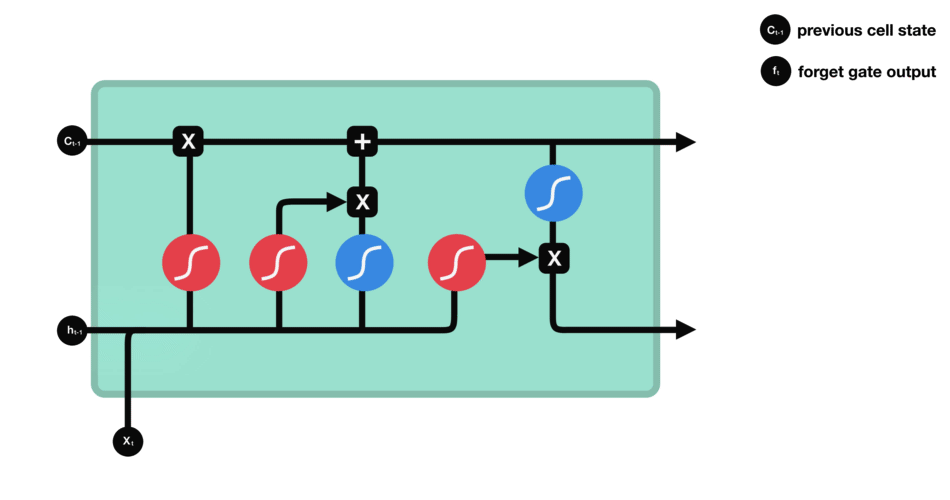
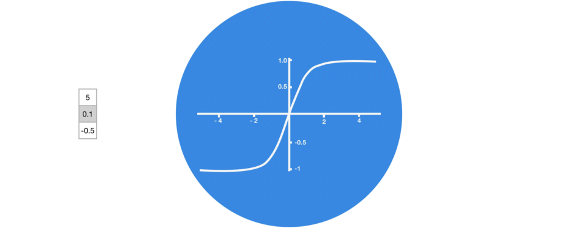
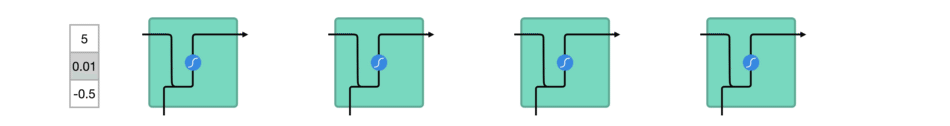
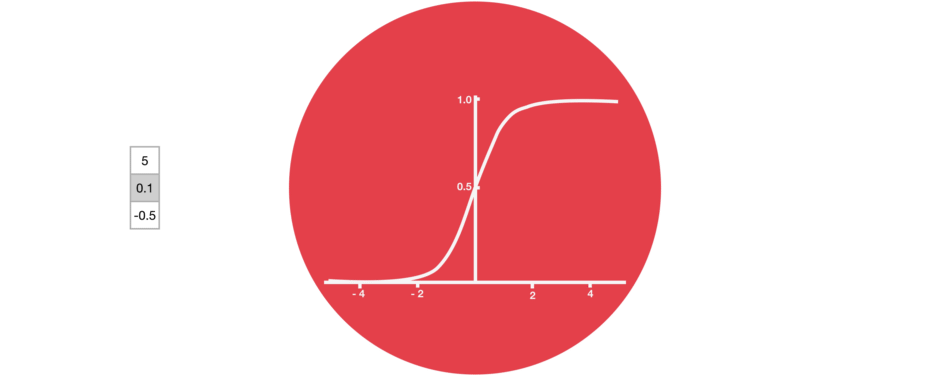

forget gate

input gate

output gate

cell state

实现
(略)
其他
tanh 激活函数的作用
tanh squishes value between -1 and 1

vector transformations without tanh

vector transformations with tanh

sigmoid激活函数的作用
当向量通过sigmoid激活函数后，可以使得输出保持在[0,1]之间的范围里，越接近0表示分量贡献越小，接近1表示分量贡献越大。起到mask的作用。
Sigmoid squishes values between 0 and 1
